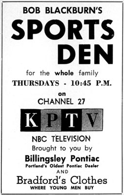

I
was
proud
to
host
the
first
ever
TV
sports
program
in
Portland
and
the
State
of
Oregon.
In
those
early
days
we
had
to
memorize
the
commercials,
as
prompters
hadn't
been
developed
yet.
No
video
tapes
yet,
but
we
aired
a
lot
at
live
interviews
and
some
movie
film
which
was
always
a
day
late
since
you
had
to
wait
and
have
it
developed.
I
think
we
used
either
16
or
32
millimeter
cameras
and
I
bought
one
to
help
take
local
pictures
for
the
show
and
then
had
it
stolen
from
the
back
seat
of
my
car
about
two
months
later.
But,
the
show
didn't
run
for
a
really
long
time
so
I
never
replaced
the
camera.
As
I
recall
it
was
fun
developing
that
first
TV
sports
show
but
I
also
found
out
TV
sports
was
a
lot
more
work
than
putting
a
radio
show
together.
No
bloopers
from
that
show
but
plenty
from
my
radio
days.
|
 |
|
An
ad
from
TV
Life
Magazine. |
After
leaving
Portland,
it
was
basically
all
sports
in
Seattle
featured
by
my
25
years
as
radio
and
some
of
the
time
television
as
the
original
"Voice
of
the
Sonics"
in
the
NBA.
It
was
a
real
honor
and
perhaps
a
bit
luck
winning
the
audition
to
become
the
first
Northwest
major
league
sportscaster
with
the
Sonics.
In
my
Seattle
work
I
have
done
quite
a
bit
of
free
lance
TV
and
still,
in
my
62nd
year
of
radio,
I
am
fortunate
to
still
represent
some
companies
on
both
media.
After
retiring
from
the
Sonics
in
1992,
I
became
a
Tour
Director
for
a
local
travel
company
and
from
1994
to
2001
my
wife
and
I
led
28
world
wide
cruises
or
land
trips
into
83
different
companies.
I
also
turned
to
auctioneering,
and
as
of
this
date
have
raised
millions
of
dollars
for
charity
and
school
auctions
with
277
appearances.
At
age
80,
I
have
four
part-time
jobs
that
keep
me
busy:
Auctions,
trip
tour
directing,
working
with
the
Seattle
Sonics
as
a
so
called
"legend"
--
making
appearances
for
them
--
and
a
wonderful
job
as
spokesperson
for
Life
Care
Services,
a
National
company
that
is
building
a
huge
retirement
facility,
Timber
Ridge
at
Talus
in
a
Seattle
suburb,
Issaquah.
In
my
life,
I
have
really
been
blessed
with
being
named
in
both
Washington
and
Oregon
in
their
Sports
Hall
of
Fame
and
being
honored
by
my
old
Fullerton
Union
High
School
in
Fullerton,
Califorina's
"Wall
of
Fame,"
which
has
some
real
luminaries
like
Richard
Nixon
and
baseball
Hall-of-Famers
Walter
Johnson,
Arky
Vaughn
and
Del
Crandall.
Bob
Blackburn,
host
of
KPTV's
"Sports
Den,"
January
2005
Thanks
to
Bob
Blackburn
and
Bob
Blackburn,
"Jr."
for
sending
this
first-person
account
to
Yesterday's
KPTV.